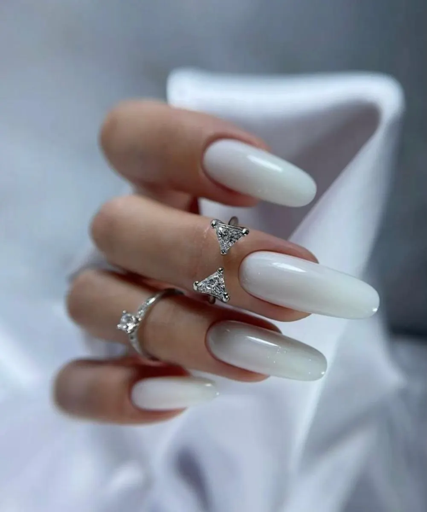
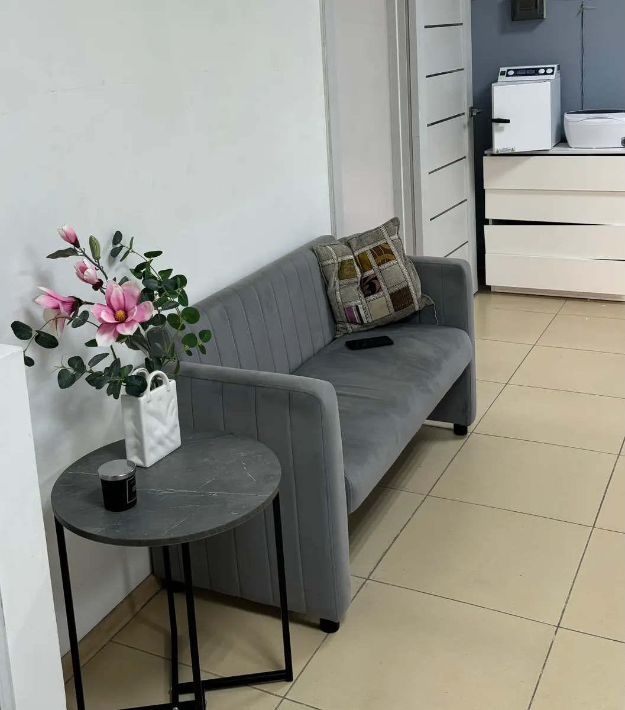
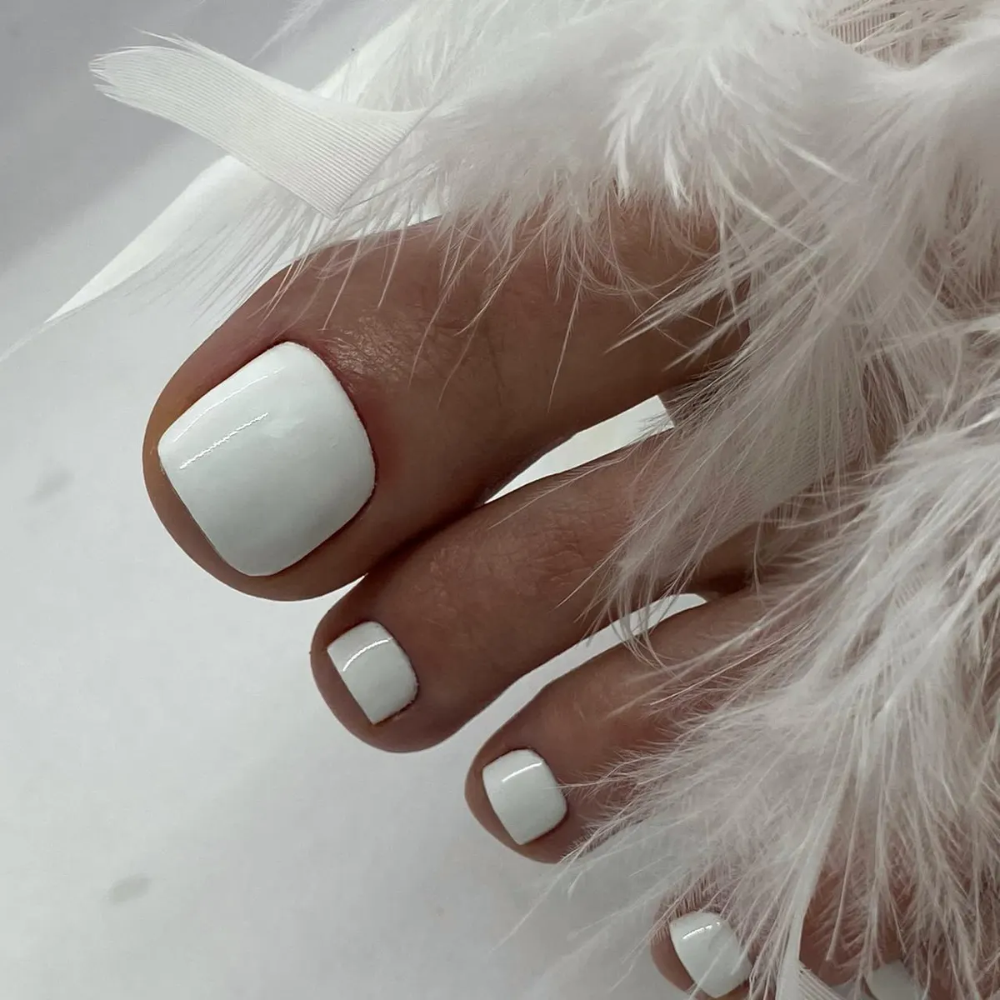
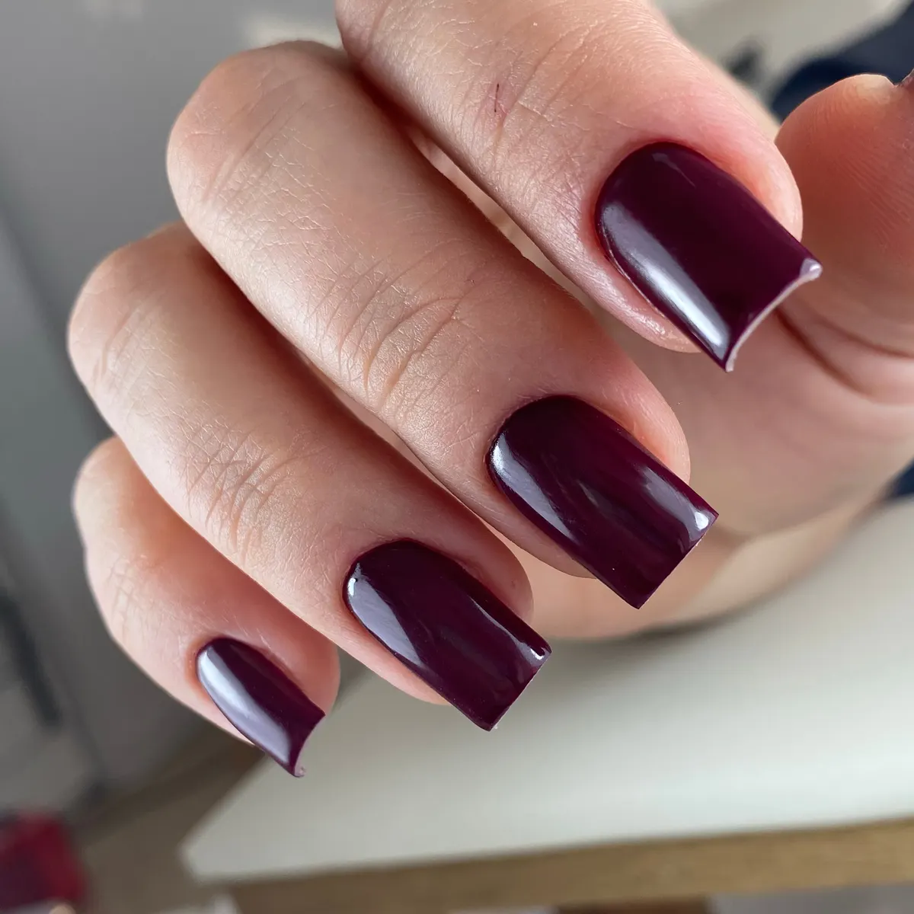

Ногтевая студия Beauty Laboratory Barhat · Пятигорск
Маникюр и педикюр в Пятигорске – без порезов и сколов
Аккуратно, без порезов на кутикуле – так пишут клиенты в отзывах. Свой подолог для проблемных ногтей и окошко часто на сегодня.
- Окошко на сегодня – спросите в WhatsApp
- Подолог: проблемные и вросшие ногти
- Парковка у студии

Услуги и цены
Цены, которых пока нет в списке, напишем в WhatsApp до записи.
Маникюр
- Маникюр с покрытиемклассический женскийот 1 600 ₽
- Маникюр без покрытиякомбинированный или аппаратныйуточнить
- Spa-маникюруточнить
- Мужской маникюруточнить
- Дизайн ногтейуточнить
- Наращивание ногтейуточнить
Педикюр и подология
- Педикюркомбинированный, аппаратный, smartуточнить
- Мужской педикюруточнить
- Приём подологапроблемные и вросшие ногтиуточнить
- Парафинотерапияуточнить
Оплата картой, наличными или переводом.
Как проходит запись
- 01
Выбираете услугу, день и время
В форме наверху страницы – сообщение сразу уйдёт в WhatsApp студии.
- 02
Студия подтверждает время
Свободного окна нет – предложат ближайшее, часто на этот же день.
- 03
Перед визитом приходит напоминание
Так пишут клиенты в отзывах на Картах.
- 04
Приходите на Нежнова, 21/1
На входе предложат чай или кофе, рядом парковка.



За что студию хвалят в отзывах
Окошко найдётся
Клиенты пишут, что их принимали и без предварительной записи.
Свой подолог
Проблемные, вросшие и «клюющие» ногти – в той же студии, что и маникюр.
Чисто и стерильно
Это отмечают в отзывах про маникюр и педикюр.
Выбор мастеров
Маникюр, педикюр, подология и ресницы – у разных мастеров одной студии.
Отзывы с Яндекс.Карт
«Все чисто , стерильно , уютно . Мастер Мария приветливая , а самое главное мастер своего дела , у меня проблемные клюющие ногти , она все исправила при этом не сделала ногтевую пластину толстой, ногти идеальные.»
Кристина О. · 30 марта 2024
«Шикарное место! Очень качественно выполнена работа! Лучше педикюр мне не делали! Отходила 2 месяца без единого скола.»
Анастасия Толстых · 25 сентября 2025
«Очень долго искала хорошего подолога,.. И мне повезло.. Обратилась с проблемными ногтями... У мастера Ирины золотые руки... Советую всем..»
Инкогнито 4008 · 15 марта
Отзывы с карточки на Яндекс.Картах, без правок.
Частые вопросы
Можно записаться на сегодня?
Да, выберите сегодняшний день в форме записи. Если окна нет, студия предложит ближайшее время.
Помогаете с вросшим или проблемным ногтем?
Да, в студии принимают подологи. Опишите проблему в WhatsApp, подскажут, к кому записаться.
Сколько стоит педикюр или дизайн?
Напишите в WhatsApp, что хотите сделать, – назовём цену до записи.
Как оплатить?
Картой, наличными или переводом.
Запишитесь – найдём окошко
- Адрес
- ул. Нежнова, 21/1, Пятигорск
- Часы
- Ежедневно 09:00–20:00, по записи
- Телефон
- +7 (906) 499-52-90